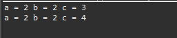
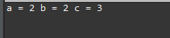
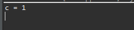
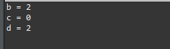

こんにちは。明月です。
この投稿は演算子に関する説明です。
演算子という意味は数式を計算する記号です。プログラムで使っている数学的な記号は我々が数学時間で勉強した数学記号とほぼ同じ意味です。
それでプログラムで演算記号で勘違いことが少ないです。しかしプログラムではただ数学が表現だけではなくビット演算、論理演算記号があるので区分しておくほうが良いです。
| 演算子 | 使用方法 | 説明 |
|---|---|---|
| 算術演算子 | ||
| ++ | ++a, a++ | 値を1を増加する。(前位,後位演算子) |
| -- | --a, a-- | 値を1を加減する。(前位,後位演算子)값을 하나 감소시킵니다.(전위, 후위 연산자) |
| + | a + b | 足す算 |
| - | a - b | 引く算 |
| * | a * b | 掛ける算 |
| / | a / b | 割る算 |
| % | a % b | 割れ残り |
| 関係演算子 | ||
| > | a > b | aがbより大きならtrueを返却、少ないか同じならfalseを返却 |
| >= | a >= b | aがbより大きいか同じならtrueを返却、少ないならfalseを返却 |
| < | a < b | aがbより少ないならtrueを返却、大きいか同じならfalseを返却 |
| <= | a <= b | aがbより少ないか同じならtrueを返却、大きいならfalseを返却 |
| == | a == b | aとb同じならtrueを返却、違いならfalseを返却 |
| != | a != b | aとbが違いならtrueを返却、同じならtrueを返却 |
| ビット演算子 | ||
| << | a << b | 整数aの2進数値を左にbほど移動させ、残りは0にする。例) 0001(1) << 2 = 0100(4) |
| >> | a >> b | 整数aの2進数の値を左にbほど移動させ、残りは正数の場合0に負数は1にする。例) 0100(4) >> 2 = 0001(1) |
| & | a & b | aとbのand計算 계산 ex) 4(0100) & 5(0101) = 4(0100) |
| | | a | b | aとbのor計算 ex) 4(0100) | 5(0101) = 5(0101) |
| ^ | a ^ b | aとbのxor計算 ex) 4(0100) ^ 5(0101) = 1(0001) |
| 論理演算子 | ||
| && | a && b | AND演算子、つまりaとbがブール値の設定で true && true なら true、 true && false なら false の結果 |
| || | a || b | OR演算子、つまりaとbがブール値の設定で true || true なら true、 true || fasle なら true の結果 |
| 대입 연산자 | ||
| += | a += b | a = a + b;と同じ意味 |
| -= | a -= b | a = a - b;と同じ意味 |
| *= | a *= b | a = a * b;と同じ意味 |
| /= | a /= b | a = a / b;と同じ意味 |
| %= | a %= b | a = a % b;と同じ意味 |
| &= | a &= b | a = a & b;と同じ意味 |
| |= | a |= b | a = a | b;と同じ意味 |
| ^= | a ^= b | a = a ^ b;と同じ意味 |
| <<= | a <<= b | a = a << b;と同じ意味 |
| >>= | a >>= b | a = a >> b;と同じ意味 |
| 三項演算子 | ||
| ? | a = b == c ? d : e | bとcが同じならaにdの値を格納、bとcが違いないらeの値を格納 |
算術演算子で前位、後位演算子の差異の説明です。
ただ、プログラムでa++と++aだけ実装すると別に差異がありません。でも他の演算記号があれば意味が全然違います。
つまり、c=b+a++とc=b+ ++aは違い意味になるということです。
public class Test {
// 実行関数
public static void main(String[] args) {
// 変数宣言
int a = 1;
int b = 2;
int c;
// ++がa変数の後にあるので後位計算
// つまり、b + aの計算でc変数に3を格納して、後にaに1を増加する。
c = b + a++;
// コンソール出力
System.out.println("a = " + a + " b = " + b + " c = " + c);
// 変数再宣言
a = 1;
b = 2;
// ++がa変数の前にあるので前位計算
// つまり、 b + aの計算する前にaに1を増加する。後でaが2になっている状況でb + aをしてcの変数には4を入力する。
c = b + ++a;
// コンソール出力
System.out.println("a = " + a + " b = " + b + " c = " + c);
}
}

前位、後位は足す算、引く算だけあります。掛ける算と割る算は代入演算子を利用して使います。(例: a*=2;)
プログラムとしてはその機能がありますが、実際には後位演算式しか使わないです。なぜなら、前位、後位が混雑になると計算式の可読性が悪くなるし勘違いする可能性が高いのでお勧めではありません。
プログラムを暗号化することではなく、チームの皆が共有しながら作業するプロジェクトなので便利性より可読性がもっと重要に考えなければならないです。
public class Test {
// 実行関数
public static void main(String[] args) {
// 変数宣言
int a = 1;
int b = 2;
int c;
// 可読性で後位演算式と計算式を混ぜないで、
c = b + a;
// aを増加する時期を別のラインに実装することで良い可読性にする。
a++;
// コンソール出力
System.out.println("a = " + a + " b = " + b + " c = " + c);
}
}

ビット演算子は2進数の概念なので少し数学的な計算です。
でも、実際にプログラムを作成する時にはほぼflag形式に使うか16進数か8進数のデータを使う時にはよく使います。
public class Test {
// 実行関数
public static void main(String[] args) {
// 2進数 10進数 16新数
// 0001 1 0x1
// 0011 3 0x3
// 0111 7 0x7
// 1111 15 0xf
// aは 0001
int a = 0x1;
// bは 1111
int b = 0xf;
// 0001
// &1111
//-------
// 0001
int c = a & b;
// c = 1
System.out.println("c = " + c);
}
}

public class Test {
// 実行関数
public static void main(String[] args) {
// 2進数 10進数 16進数
// 0001 = 1 0x1
int a = 0x1;
// 1が左に1移動
// 0010 = 2 0x2
int b = a << 1;
// コンソール出力
System.out.println("b = " + b);
// 1が右に1移動
// 0000 = 0 = 0x0;
int c = a >> 1;
// コンソール出力
System.out.println("c = " + c);
// 0010 XOR 0000 = 0010
int d = b ^ c;
// コンソール出力
System.out.println("d = " + d);
}
}

上のビッド演算だけみると10進数より見にくいのでよく使わないらしいですが、flag設定でよく使います。
知っておくとすごく便利な機能です。
public class Test {
// 実行関数
public static void main(String[] args) {
// 実は変数名は日本語で使うとエラーが発生する可能性があります。
// 0x1 = 0001
int 洗濯 = 0x1;
// 0x2 = 0010
int 掃除 = 0x2;
// 0x4 = 0100
int 皿洗い = 0x4;
// 0x8 = 1000
int 勉強 = 0x8;
// peopleは洗濯と掃除をした。
// 0001 | 0100 = 0101
int people = 洗濯 | 掃除;
// 洗濯をしたかを確認する。
if ((洗濯 & people) == 洗濯) {
// コンソール出力
System.out.println("洗濯した。");
}
// 掃除をしたかを確認する。
if ((掃除 & people) == 掃除) {
// コンソール出力
System.out.println("掃除した。");
}
// 皿洗いをしたかを確認する。
if ((皿洗い & people) == 皿洗い) {
// コンソール出力
System.out.println("皿洗いした。");
}
// 勉強したかを確認する。
if ((勉強 & people) == 勉強) {
// コンソール出力
System.out.println("勉強した。");
}
}
}
上のソースみたいに変数をする必要がなしで一つの変数で四つの情報を入れることができます。洗濯したか掃除したかの情報です。
ビット値は上みたいによく使うので参考してください。
ここまで演算子に関する説明でした。
ご不明なところや間違いところがあればコメントしてください。
- [Java] 15. 列挙型(バイナリデータビット演算子の使用例)2019/08/23 19:46:10
- [Java] 14. オブジェクト指向プログラミング(OOP)の4つ特性(カプセル化、抽象化、継承、多相化)2019/08/22 20:08:37
- [Java] 13. 抽象クラス(abstract)と継承禁止(final)2019/08/22 00:06:20
- [Java] 12. インタフェース(interface)2019/08/20 23:46:23
- [Java] 11. StringのhashCodeとequals、そしてtoStringの再定義(override)2019/08/20 00:42:04
- [Java] 10. メモリの割り当て(stackメモリとheapメモリ、そしてnew)とCall by reference(ポインタによる参照)2019/08/07 20:53:34
- [Java] 9. アクセス修飾子とstatic2019/08/06 20:22:48
- [Java] 8. クラスの継承とthis、superキーワードの使い方2019/08/05 23:22:58
- [Java] 7. クラスを作成する方法(コンストラクタを作成方法)2019/08/02 22:45:42
- [Java] 6. 関数の使い方(関数のオーバーロードと再帰的な方法について)2019/08/01 20:40:40
- [Java] 5. 配列とリスト(List)、マップ(Map)の使い方2019/07/26 23:25:58
- [Java] 4. 制御文2019/07/25 23:37:36
- [Java] 3. 演算子2019/07/25 23:38:36
- [Java] 2. 変数と定数の宣言方法、そして原始データタイプとクラスデータタイプの差異2019/07/24 23:12:32
- [Java] 1. Javaとは？、Javaインストール、Eclipseインストール2019/07/24 23:03:21
- [CentOS] Redisデータベースをインストールする方法とコマンドを使い方2022/02/14 18:33:07
- [Design pattern] 3-6. ステートパターン(State pattern)2021/11/17 20:04:47
- [Design pattern] 3-5. メメントパターン(Memento pattern)2021/11/16 20:01:36
- [Design pattern] 3-4. イテレータパターン(Iterator pattern)2021/11/15 19:31:28
- [CentOS] Linux環境(CentOS)でCassandra(NoSQL DB)をインストールする方法(DBeaverブラウザでNoSQL使い方)2021/11/12 17:33:58
- [Design pattern] 3-3. コマンドパターン(Command pattern)2021/11/05 17:01:42
- [Window] apache-tomcatでロードバランシング(Load balancing)する方法とセッションクラスタリング（セッション共有）2021/11/05 16:58:45
- [Window] Apacheでmod_jkとmod_proxyの差異、apacheでtomcatのwebsocketのプロキシフォーワードする方法2021/11/05 16:55:05
- [PHP] Apache環境の同じホスト中でPHPとJava(Servlet)を同時に起動、運用する方法2021/11/05 16:52:04
- [C#] 61. ウィンドウフォーム(Window form)でスレッド(Thread)を使い方、クロススレッド問題解決2021/11/04 19:29:51
- [Design pattern] 3-2. 責任の連鎖パターン(Chain of responsibility pattern)2021/11/04 19:27:58
- [Design pattern] 3-1. ストラテジーパターン(Strategy pattern)2021/11/03 18:38:52
- [C#] 60. ウィンドウフォーム(Window form)のイベント設定する方法2021/11/02 21:18:08
- [Design pattern] 2-7. ファサードパターン(Facade pattern)2021/11/02 19:32:31
- [Design pattern] 2-6. プロキシパターン(Proxy pattern)2021/11/01 19:42:44